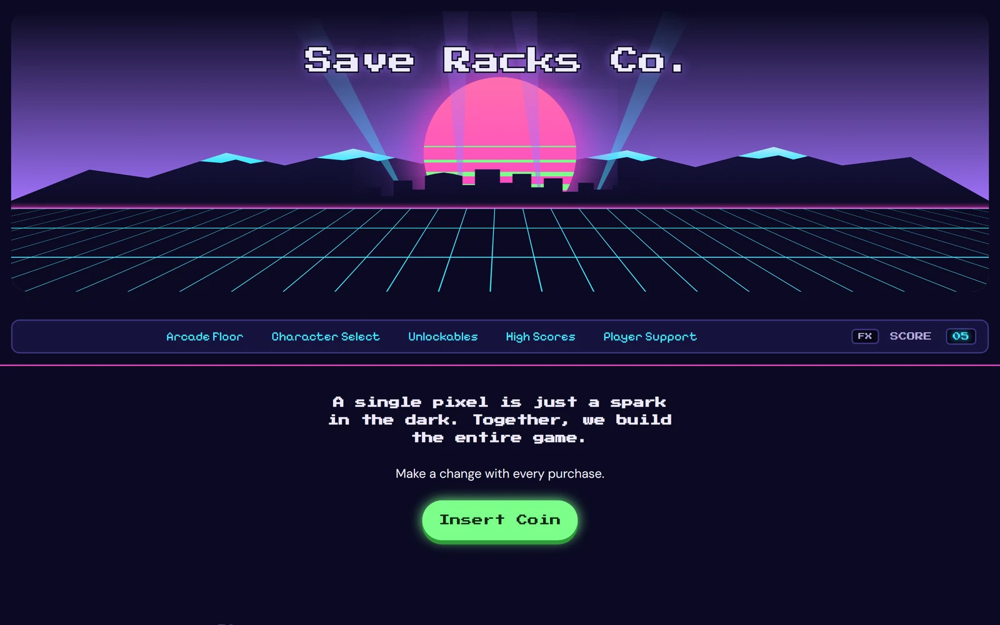
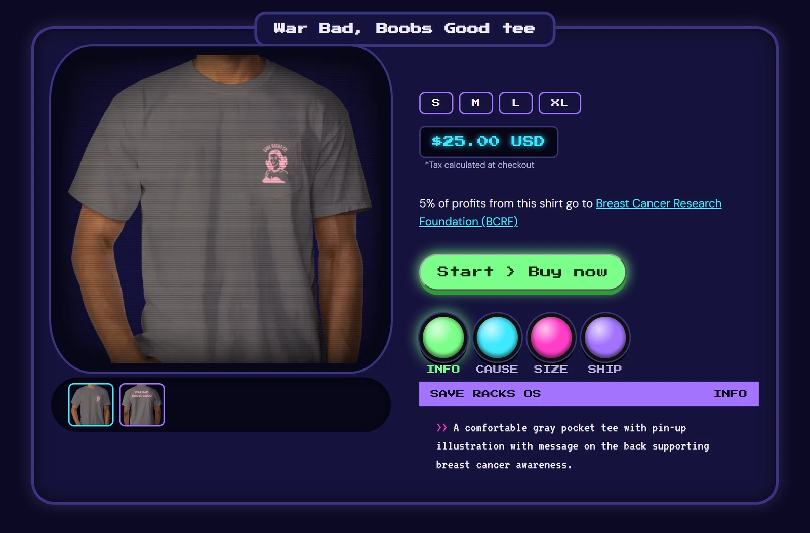
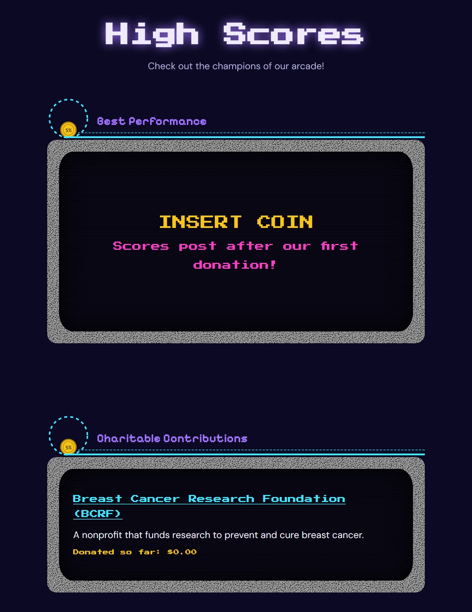
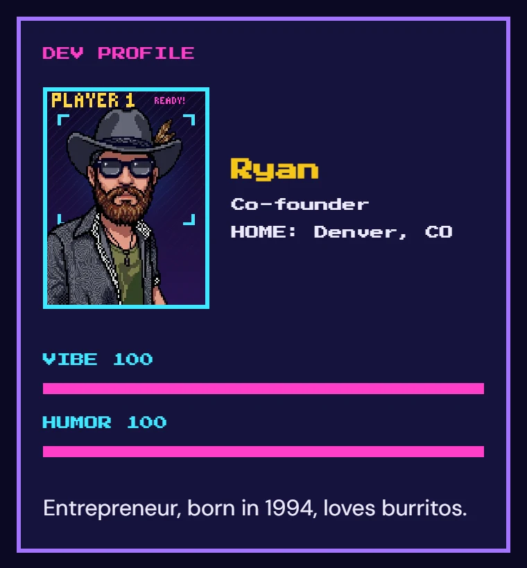
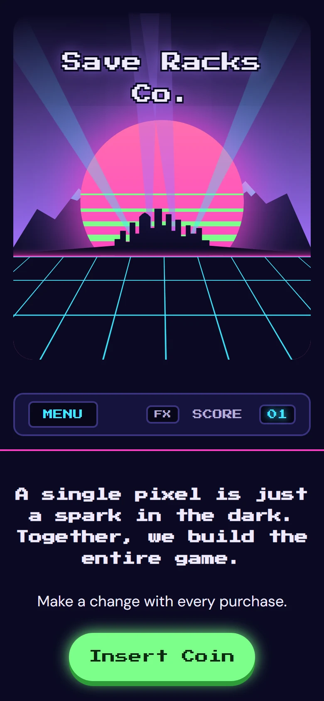
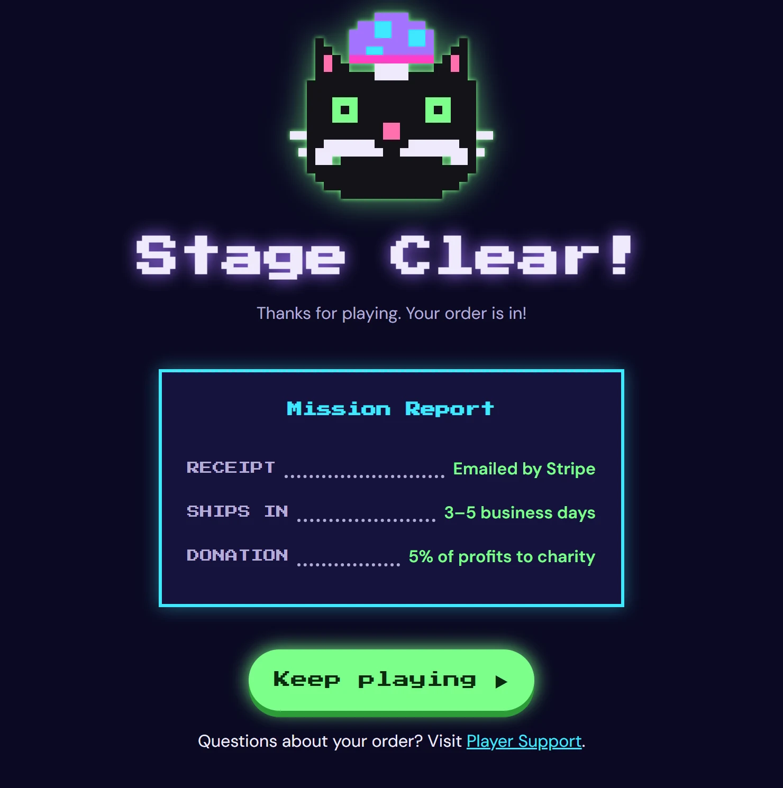

| Role | Sole developer: requirements, design, front-end build, QA |
|---|---|
| Client | Save Racks Co., a two-owner Denver business selling cause-awareness apparel, with 5% of profits going to charity, starting with breast cancer research |
| Timeline | October 2026, about one week from first meeting to a launch-ready site |
| Built with | HTML, CSS, JavaScript (no frameworks), JSON data files, Git and GitHub |
| Status | Launching soon: checkout and hosting go live once the client's payment account is set up |

The problem
The owners were paying monthly for a Shopify store that was more than they needed: they sell a handful of shirts, ship orders themselves, and wanted to spend $0 a month. They also had requirements a template couldn't meet well:
- Both owners need to update the site without learning a website builder.
- The charity pledge has to be accurate. A store that says "5% goes to charity" makes a public promise, so every number shown has to be real.
- They wanted it to feel like them: playful, a little edgy, and hopeful, not like every other store.
My approach
1. Requirements before code. I interviewed the owner, then wrote a project plan, a brand brief and a site map. I documented the open questions only he could answer (charity, shipping policy, donation wording) instead of guessing. I also flagged the legal and trust issues a cause-based store carries: accurate charity claims, consent before posting customer reviews (some may include health details), and never sharing account passwords.
2. Design around the brand. Together we chose an 8-bit arcade theme: products sit in arcade cabinets, causes are game cartridges, the donation page is a High Scores board, the order page is "Stage Clear!", and a broken link is "Game Over". I sketched mobile and desktop wireframes before writing any code.
3. Build it so the data drives the page.

Data-driven, and honest by design
Instead of typing products and numbers into the HTML, all content lives in seven small JSON files (products, causes, charities, donations, reviews, team and site settings). JavaScript reads them and builds each page.
- The owners edit data, not code. Adding a shirt, marking a size sold out or connecting a
checkout link means changing one line in
products.json. - One source of truth. The donation rate is stored once, and every page that mentions it reads it from there. Each shirt points to its charity by id, and donations point to charities the same way, like tables joined in a database.
- No fake numbers. Until real donations and reviews exist, the site shows honest, on-theme empty states ("INSERT COIN", "ENTER YOUR INITIALS") instead of placeholder totals or made-up testimonials. When the owner chose to donate 5% of profits rather than of sales, I removed a per-shirt dollar figure the site could no longer guarantee.
- Privacy first. The privacy page lists everything the site collects and what it doesn't. Payment details are handled only by Stripe; the site never sees them.
As an ICU nurse, I learned that if it isn't true, it doesn't go in the chart. I held this store's numbers to the same standard.


The challenge: learning JavaScript from scratch
I came in knowing Python and R for data work, but not JavaScript or how a web page actually runs. The hardest part wasn't syntax; it was where code lives and when it runs.
- Scope and placement. More than once my code was correct but did nothing, because I'd
pasted it inside a block that only runs on a click, or after an early
returnthat exits first. I learned to read the structure of a file before adding to it. - Asynchronous data. Pages load their data with
fetch, which returns later, not instantly. I learned to wait for it withasync/await, load several files at once withPromise.all, and handle failures withtry/catchso a bad connection shows a friendly message instead of a blank page. - Guard clauses. Every page checks for the unexpected first: a product link with a bad id, an item that isn't released yet, missing data. Each case gets a clear on-theme message ("Gear not found").
- Debugging methodically. I learned to check the browser console, rule out a cached old file before assuming the code was wrong, and change one thing at a time.
Quality and results
- Lighthouse (Google's site audit), mobile: every audited page scored 95 to 99 for performance.
- Fixed a real performance bug: the product page first scored 86 because content jumped around while it loaded. I measured the shifts, reserved space for the content before it arrived, and brought the page to 99.
- Accessible to more people: screen-reader labels and live announcements, a logical heading order, alt text on every image, and a site-wide "FX" switch that turns off animations (it also follows the device's reduced-motion setting).
- Tested like a release: three full-site QA sweeps at phone and desktop sizes (overflow, broken links, missing files, edge cases), plus W3C HTML validation.
- Search and sharing ready: product structured data for Google, social share previews, and the site can be installed on a phone like an app.


By the numbers: 13 pages, 11 JavaScript files, 7 data files, about 3,900 lines of code and 75 Git commits.
How I worked
I wrote the site's HTML, CSS and JavaScript myself, using an AI assistant (Claude) as a tutor and code reviewer: it explained concepts, reviewed each change and helped me debug, one small step at a time. It also helped produce some image assets, such as the pixel art icon and mascot. I kept a running log of every lesson learned, and I used version control from day one, with separate private repositories for the code and the planning documents.
What's next
- Launch: Stripe payment links, free hosting on Cloudflare, and a final audit on the live site
- A donation-goal "boss health bar" once the owners set a goal
- A shopping cart (a small serverless function with Stripe Checkout) if the product line grows
What I took away
The data model is the product. Once the content lived in clean data files, every page got simpler, and the owners can keep it accurate without me.
← Back to portfolio